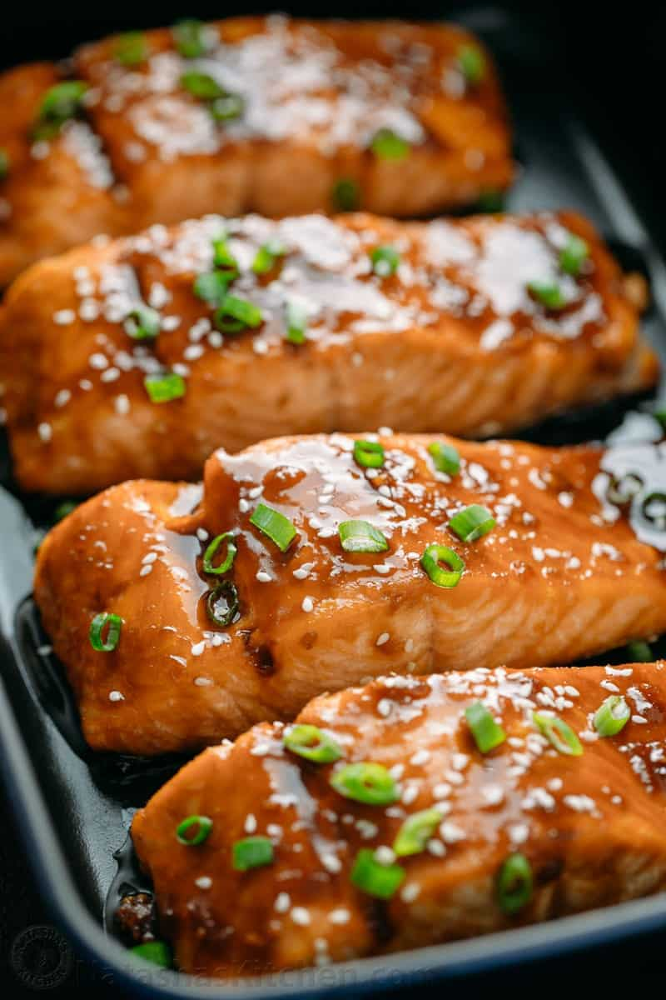

Teriyaki Salmon

Description
A Seishin favorite!
Ingredients
- Frozen or fresh Salmon fillets (1 fillet per person)
- Teriyaki Marinade
- Green Onion
Steps
- Prep: Defrost salmon (if frozen) by placing under running water for 30 minutes,
then marinade with teriyaki sauce for another 30 minutes. Preheat oven to 350 degrees.
- Place salmon filets into baking dish, pour on additional teriyaki sauce, then place into oven for 16 minutes.
- Remove salmon from oven, place freshly cut green onion on top, and serve.